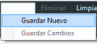
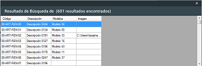
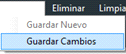
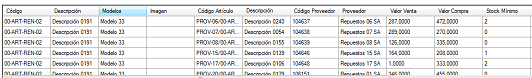
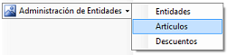

.
.|
Artículo
|
Inicio Siguiente |
1. Para crear un artículo debemos hacer clic en el botón .
2. Dentro de la nueva ventana, debe hacer clic en el botón superior poder ingresar
un nuevo artículo.
3. Los datos propios del artículo son definidos en el cuadro superior (Código, Descripción,
etc).
4.Una vez finalizada la carga de datos, debe presionar el botón superior Guardar -> .
TIP: SI DESEA LIMPIAR LOS CAMPOS DE DATOS PUEDE UTILIZAR EL
BOTÓN .
CREAR ARTÍCULO DE PROVEEDOR
1. Antes de comenzar dicha alta, debemos haber realizado el Alta de
Artículo(HYPERLINK arriba).
2. Debemos buscar dando clic en el botón superior, se nos aparecerá una ventana
similar a  donde debemos
seleccionar el artículo original con doble clic.
3. Luego de la anterior selección, se completarán los datos del artículo a partir del cual
crearemos el nuevo artículo proveedor. A partir de allí estamos habilitados para ingresar
los datos en el cuadro inferior de .
ACLARACIÓN: En la grilla inferior, podremos observar cuantos artículos
proveedores fueron creados a partir de dicho artículo.
4.Ya completos los datos del artículo de proveedor, le damos clic al botón .
Se mostrará una ventana informando el resultado del proceso. En caso de ser exitosa
veremos reflejado el nuevo artículo de proveedor en la grilla inferior.
MODIFICAR ARTÍCULO
1. Para modificar un artículo debemos hacer clic en el botón .
2. Dentro de la ventana "Artículos", debemos buscar el artículo ingresando
opcionalmente algún dato en los campos disponibles y luego presionar el
botón .
.
3. En la ventana emergente, se muestran los resultados de la búsqueda y puede
seleccionar el artículo haciendo clic sobre el mismo.
4. Ya autocompletados los datos del artículo podemos realizar las modificaciones
necesarias.
5. Una vez finalizada la modificación, debe dar clic en el botón superior Guardar -> (CAMBIAR POR "GUARDAR CAMBIOS").
TIP: EN CASO DE QUE SE DESEE PUEDE ELEGIR CUALQUIER
ARTICULO DE PROVEEDOR A MODIFICAR SOLAMENTE HACIENDO
CLIC SOBRE EL MISMO EN LA GRILLA.
MODIFICAR ARTÍCULO DE PROVEEDOR
1. Para modificar un artículo debemos hacer clic en el botón .
2. Dentro de la ventana "Artículos", debemos buscar el artículo ingresando
opcionalmente algún dato en los campos disponibles y luego presionar el
botón .
.
3. En la ventana emergente, se muestran los resultados de la búsqueda y puede
seleccionar el artículo haciendo clic sobre el mismo.
4. Ya autocompletados los datos del artículo se visualiza en la grilla inferior aquellos artículos de proveedor asociados al artículo. Seleccionamos el artículo
desde la grilla con un clic y automáticamente se completan los campos del sector
de Artículos de proveedor, los cuales quedan habilitados para ser modificados.
aquellos artículos de proveedor asociados al artículo. Seleccionamos el artículo
desde la grilla con un clic y automáticamente se completan los campos del sector
de Artículos de proveedor, los cuales quedan habilitados para ser modificados.
5. Una vez finalizada la modificación, debe dar clic en el botón 
en el borde superior de la grilla anterior.
TIP: EN CASO DE QUE SE DESEE PUEDE ELEGIR CUALQUIER
ARTICULO DE PROVEEDOR A MODIFICAR SOLAMENTE HACIENDO
CLIC SOBRE EL MISMO EN LA GRILLA.
ELIMINAR ARTÍCULO
1. Para eliminar un artículo debemos hacer clic en el botón .
2. Dentro de la ventana "Artículos", debemos buscar el artículo ingresando opcionalmente
algún dato en los campos disponibles y luego presionar el botón.
3. En la ventana emergente, se muestran los resultados de la búsqueda y puede seleccionar
el artículo haciendo clic sobre el mismo.
4.Ya autocompletados los datos del artículo procedemos con la eliminación, dando clic
en el botón ubicado en la parte superior de la ventana.
ELIMINAR ARTÍCULO DE PROVEEDOR
1. Para eliminar un artículo debemos hacer clic en el botón .
2. Dentro de la ventana "Artículos", debemos buscar el artículo ingresando opcionalmente
algún dato en los campos disponibles y luego presionar el botón.
3. En la ventana emergente, se muestran los resultados de la búsqueda y puede seleccionar
el artículo haciendo clic sobre el mismo.
4. Ya autocompletados los datos del artículo si visualiza en la grilla inferior aquellos artículos de proveedor asociados al artículo. Seleccionamos el artículo desde la
grilla con un clic y automáticamente se completan los campos del sector de Artículos de
proveedor, en los cuales puede corroborar su selección.
aquellos artículos de proveedor asociados al artículo. Seleccionamos el artículo desde la
grilla con un clic y automáticamente se completan los campos del sector de Artículos de
proveedor, en los cuales puede corroborar su selección.
5.Para proceder con la eliminación, debe dar clic en el botón en el borde
superior de la grilla anterior.
TIP: EN CASO DE QUE SE DESEE PUEDE ELEGIR CUALQUIER ARTICULO DE
PROVEEDOR A MODIFICAR SOLAMENTE HACIENDO CLIC SOBRE EL MISMO
EN LA GRILLA.